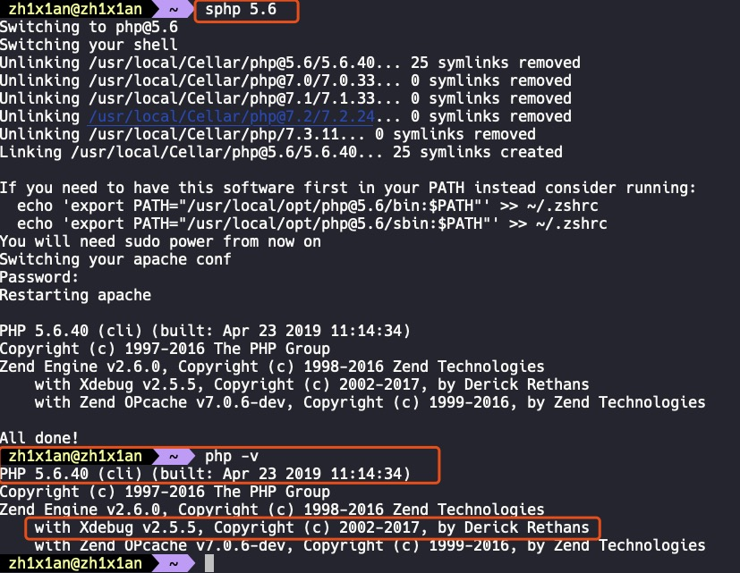
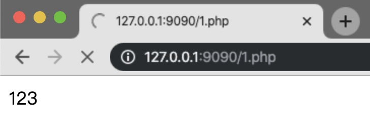
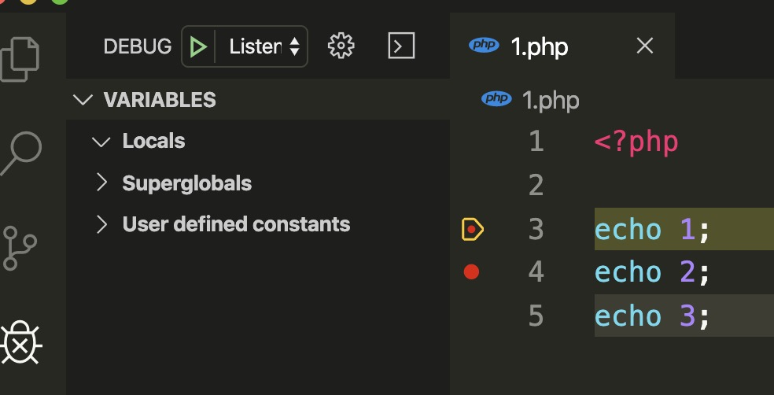
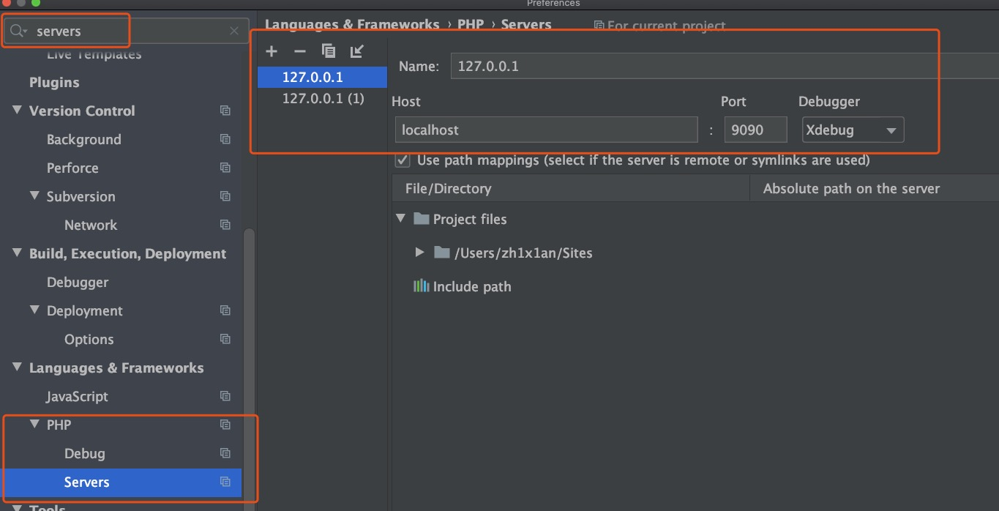
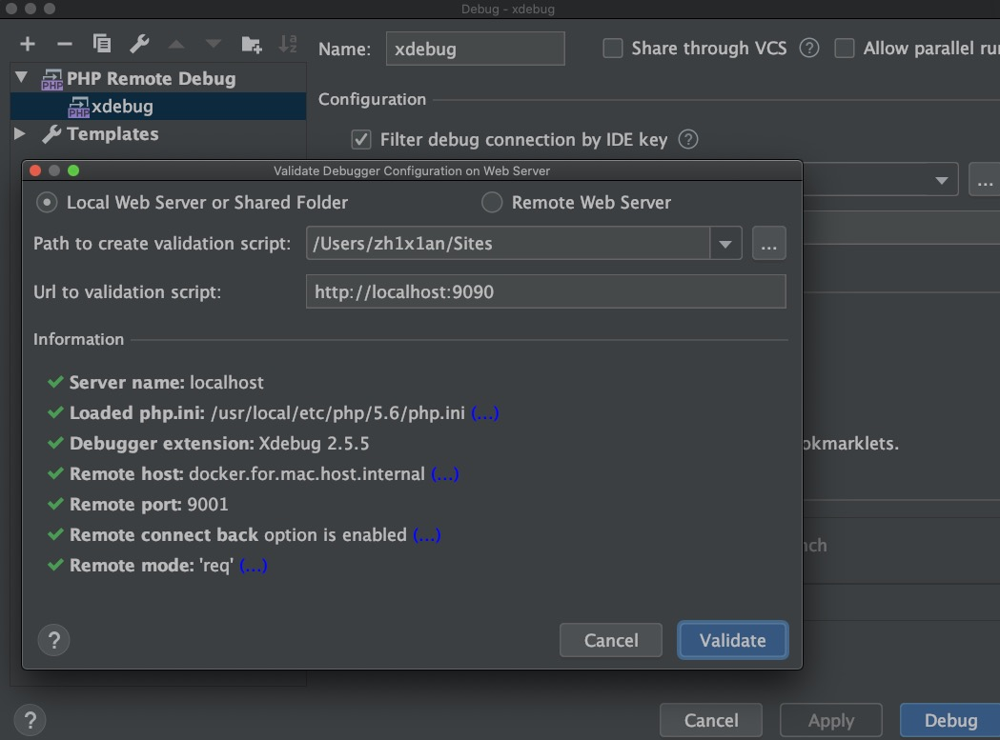
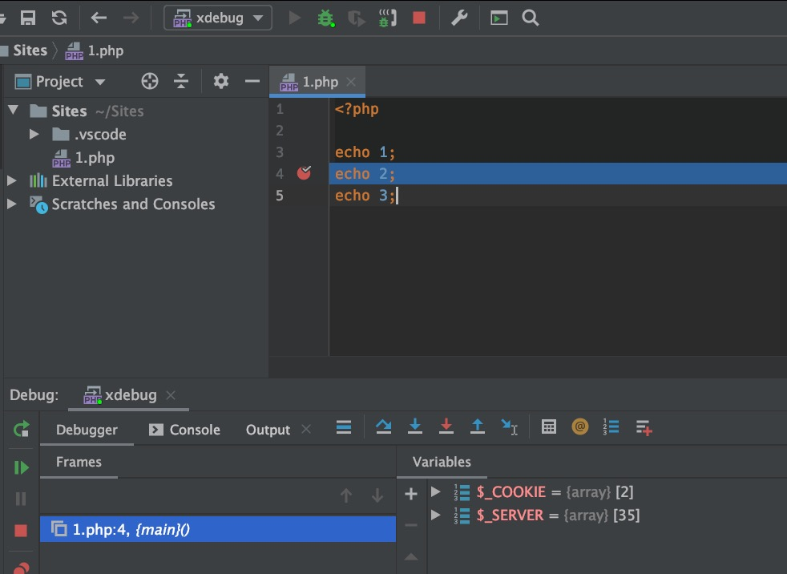

PHP代码审计环境搭建
mac mamp + xdebug
install required libraries
brew install openldap libiconvapache2
sudo apachectl stop
sudo launchctl unload -w /System/Library/LaunchDaemons/org.apache.httpd.plist 2>/dev/null
brew install httpd
sudo brew services start httpdMultiple Versions PHP
brew tap exolnet/homebrew-deprecated
brew install php@5.6
brew install php@7.0
brew install php@7.1
brew install php@7.2
brew install php@7.3PHP Switcher Script (sphp)
curl -L https://gist.githubusercontent.com/rhukster/f4c04f1bf59e0b74e335ee5d186a98e2/raw > /usr/local/bin/sphp
chmod +x /usr/local/bin/sphpexample:
Switching to php@7.1
Switching your shell
Unlinking /usr/local/Cellar/php@5.6/5.6.40... 319 symlinks removed
Unlinking /usr/local/Cellar/php@7.0/7.0.33... 0 symlinks removed
Unlinking /usr/local/Cellar/php@7.1/7.1.32_1... 0 symlinks removed
Unlinking /usr/local/Cellar/php@7.2/7.2.23... 0 symlinks removed
Unlinking /usr/local/Cellar/php/7.3.10... 208 symlinks removed
Linking /usr/local/Cellar/php@7.1/7.1.32_1... 25 symlinks created
If you need to have this software first in your PATH instead consider running:
echo 'export PATH="/usr/local/opt/php@7.1/bin:$PATH"' >> ~/.zshrc
echo 'export PATH="/usr/local/opt/php@7.1/sbin:$PATH"' >> ~/.zshrc
You will need sudo power from now on
Switching your apache conf
Restarting apache
PHP 7.1.32 (cli) (built: Oct 6 2019 20:44:48) ( NTS )
Copyright (c) 1997-2018 The PHP Group
Zend Engine v3.1.0, Copyright (c) 1998-2018 Zend Technologies
with Zend OPcache v7.1.32, Copyright (c) 1999-2018, by Zend Technologies
All done!切换为 php 5.6 ：

xdebug
pecl install xdebug随后在 vscode 或者 phpstorm 中配置 xdebug 即可。
vscode 安装 xdebug ：
比较简单，直接安装 vscode 插件 phpdebug 即可，也不需要特别多的配置。


phpstorm 安装 xdebug ：
相对复杂一点：



然后就可以开始尽情的代码审计了。
没有断点，不用动态调试的代码审计，等于白给。
参考资料
转载请注明来源，欢迎对文章中的引用来源进行考证，欢迎指出任何有错误或不够清晰的表达。可以在下面评论区评论
文章标题:PHP代码审计环境搭建
文章字数:393
本文作者:知弦
发布时间:2019-11-17, 23:46:05
最后更新:2019-11-26, 23:37:04
原始链接:http://zh1x1an.com/2019/11/17/PHP%E4%BB%A3%E7%A0%81%E5%AE%A1%E8%AE%A1%E7%8E%AF%E5%A2%83%E6%90%AD%E5%BB%BA/版权声明: "署名-非商用-相同方式共享 4.0" 转载请保留原文链接及作者。